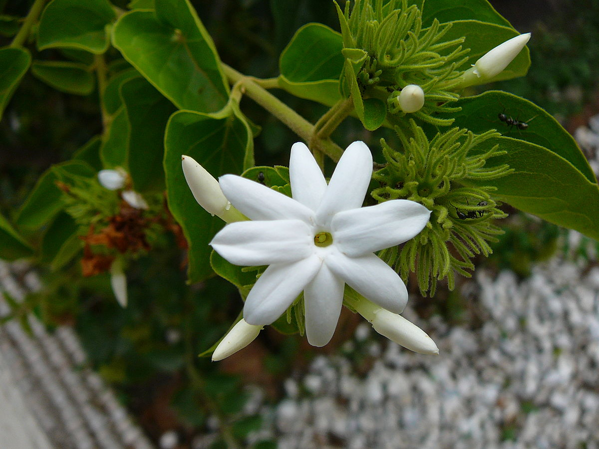
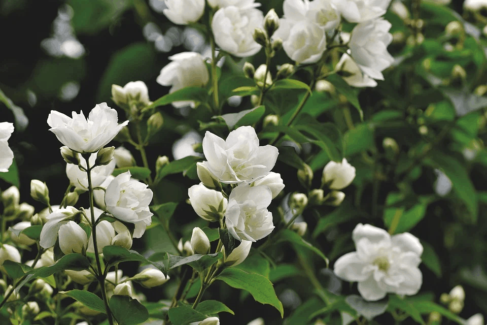

jasmine flowers
.jpeg)


The flower's primary role is to attract pollen matres to the plant to ensure the reproduction and survivalof the plant species. Many plants and pollen substances adapt their properties to provide mutuallybeneficial relationships for each organism. These species rely on flower nectar and pollen for nutrition,just as plants rely on bees, bats, moths, and hummingbirds to pollinate flowers.
For example, some flowers produce two types of pollen. One is for pollination, and the other is for feeding pollen matters. Other flowers have an intricate design on the petals called nectar guides that help pollen matres find pollen in the flowers. Most flower colours, shapes, and scents have evolved over thousands of years to benefit plant species and the pollen matter that visits the flowers.
For example, some flowers produce two types of pollen. One is for pollination, and the other is for feeding pollen matters. Other flowers have an intricate design on the petals called nectar guides that help pollen matres find pollen in the flowers. Most flower colours, shapes, and scents have evolved over thousands of years to benefit plant species and the pollen matter that visits the flowers.
The flower's primary role is to attract pollen matres to the plant to ensure the reproduction and survivalof the plant species. Many plants and pollen substances adapt their properties to provide mutuallybeneficial relationships for each organism. These species rely on flower nectar and pollen for nutrition,just as plants rely on bees, bats, moths, and hummingbirds to pollinate flowers.